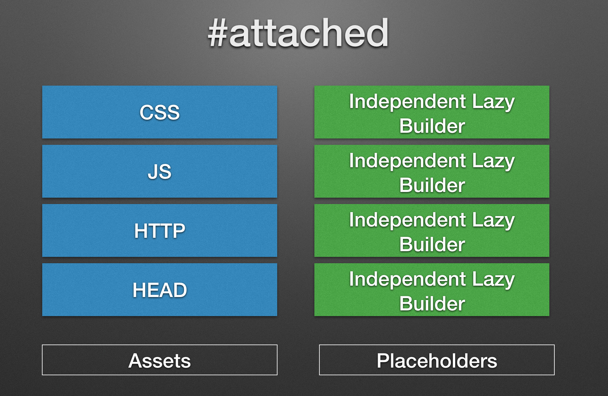

Making Drupal fly
The fastest Drupal ever is here!
🌴 Barcelona edition 🌴
- Fabian Franz (Tag1 Consulting — @fabianfranz)
- Wim Leers (Acquia — @wimleers — wimleers.com)
I have installed Drupal. However, it's running very, very slowly. Hitting the front page or clicking on a link such as administer can result in delays of 15-30 seconds. Caching is enabled.
There is almost nothing in my installation. Very few users, very little content.
d.o/node/63722 — complaining about Drupal 4.7!
Drupal 5
November 2007Why is my drupal site so slow?
Drupal 6
February 2013[…] navigating between admin pages is slower than an arthritic snail.
Drupal 7
November 2011Drupal 7 is unnaceptably slow
Poor Drupal…
Drupal 8
???
Keep calm and cache!
Page cache
… in Drupal 3.0.0
function cache_get() {
global $user, $REQUEST_URI, $REQUEST_METHOD;
if (!$user->id && $REQUEST_METHOD == "GET") {
if ($cache = db_fetch_object(db_query("SELECT * FROM cache WHERE url = '". check_input($REQUEST_URI) ."'"))) {
cache_clear(variable_get("cache_clear", 30));
}
else {
ob_start();
}
}
return $cache->data ? $cache->data : 0;
}… since June 30, 2001!
[...] generating a page in Drupal 5 is 3% slower than in Drupal 4.7. [...] serving a cached page [...] Drupal 5 is 73% faster [...] and 268% faster when the aggressive database cache is used.
However Drupal 4.7 back then looked like this.
But overall ...
We are starting to see a trend here.
Drupal 8
September 2015Drupal 8 is the fastest Drupal ever.
The fastest Drupal ever?
Are you serious?
You are kidding right?
But I thought Drupal 8 was slow!!!11111
Everyone told me that!
So it must be TRUE!
And besides that, page cache was already in Drupal 7 3!
Page Cache really does not count!
- ( Except it does, as Wim will show you later. )
So let's take a look ...
... at a very short demo ...
... to show you ...
Confused?
Let us take that more slowly.
What you just saw ...
... is part of the mission ...
... to make the whole web fast.
Make the whole web fast
- A challenge by Wim Leers.
- http://calendar.perfplanet.com/2013/making-the-entire-web-fast/
- Everyone profits from this!
Ambitious goal, so lets see what "fast" means:
- Great User Experience, pages load fast for 1 user
- Great User Experience, pages load fast for [n] concurrent users
- Time-to-First-Byte + Asset loading + Rendering + JS exec time == minimal
How do you achieve that?
- SIMPLE!
- Use static HTML pages
- Use no CSS
- Use no Javascript
- Use no images
- Just text and links!
Seriously?
No, of course not!
There is some truth to that, though!
Performance Optimization means:
Optimize to do:
- As little work as possible!
- As little resources as possible!
So for the "critical path" the process is:
Can we:
- ... avoid doing the work at all?
- ... avoid doing the work during the critical path?
- ... cache it permanently?
- ... cache it temporarily?
- ... defer executing it after the main content? (Big Pipe)
So, remember ACD:
Avoid, Cache, Defer
Caching has problems
Content should:
- ... be as current as possible.
- ... have a high cache hit ratio.
- ... have low cache invalidation complexity.
Choose 2!
You can't have all three!
Examples for low complexity cache invalidation:
Time-Based Invalidation
- Cache pages unconditionally for a year, content is not really current, but cache hit ratio is great.
- Cache pages never, content is always current, but cache-hit ratio is 0%.
- A lot of Drupal 7 sites operate that way right now :(
- Cache pages for e.g. 6 hours, content is quite current and cache hit ratio is acceptable.
Examples for low complexity cache invalidation:
Clear All Invalidation
- Whenever a page changes, clear the whole page cache.
- ⇒ Drupal 7's page cache operates like this by default.
Examples for high complexity cache invalidation (D7 contrib):
Clear only what has changed
- e.g.
expire/varnishmodule in D7. - Needs to purge / expire all URLs that contain content from anything and needs to track that.
- ⇒ High invalidation cost
Drupal 8 chose high-complexity
- Content invalidated instantaneously
- Cached permanently
- Solution: Cache Tags (explained later)
Caching has more problems
Content should:
- ... be varied by a user / group / special permission / phase of the moon (granularity).
- ... have a high cache hit ratio.
- ... have low complexity (logic needed to ensure caches are granularly varied).
Choose 2!
You can't have all three!
( What again? )
Drupal 8 chose high-complexity
- Everything declares what it varies by.
- This allows caching authenticated user content securely.
- Solution: Cache Contexts (explained later) + Placeholders
Wait a moment!
What about KISS?
(Keep It Simple, Stupid!)
Counter Question:
Who of you uses a database?
Databases are actually "beasts of complexity"
... but you don't see any of that!
... you just give hints and the database does its magic.
Drupal 8 makes it as simple as possible for you!
- Huge opportunity!
- Drupal 8 does all the caching logic internally.
- If you give Drupal information, then it can be smarter about its decisions.
Drupal 8 formalizes those things in a "language" to make your site fast.
Drupal 7 can use the same "language" — once it is finalized in Drupal 8.
- render_cache 7.x-2.x module
- service_container — using the same code base as Drupal 8
- [ developed in parallel, but 7.x frozen atm. ]
But how do I give this information?
Wim will show you now!
The thought process
The theory of how we make Drupal fast.
Dependencies, dependencies, dependencies!
- Drupal 7 didn't track any dependencies
- e.g.
drupal_add_css(),drupal_add_js()… - ⇒ Global state: impossible to cache
- ⇒
#attachedasset libraries solve that
Dependencies, dependencies, dependencies!
- Drupal 7 didn't track any dependencies
- e.g.
url()'s output depended on:<front>configuration- HTTPS configuration
- clean URL configuration
- current site in multisite
- current host name
- path processing
- negotiated interface language
- negotiated URL language
- …
- ⇒ impossible to
cacheinvalidate - … yet many of us did it anyway!
Correct invalidation in Drupal 8
- Cache tags (data dependencies)
- Cache contexts (context dependencies)
- Cache max-age (time dependencies)
+
Cacheability bubbled during rendering!
In practice
Try to make this thought process a habit:
1.
I'm rendering something. That means I must think of cacheability!
2.
Is this something that's expensive to render, and therefore is worth caching?
↪︎ If "yes": cache keys.
$build['#cache']['keys'] = ['node', 5, 'teaser'];3.
Does the representation of the thing I'm rendering vary per combination of permissions, per URL, per interface language, per … something?
↪︎ If "yes": cache contexts.
$build['#cache']['contexts'][] = 'user.permissions';
$build['#cache']['contexts'][] = 'url';
~ HTTP's Vary header
4.
What causes the representation of the thing I'm rendering become outdated?
↪︎ If "yes": cache tags.
$build['#cache']['tags'][] = 'node:5';
$build['#cache']['tags'][] = 'user:3';
$build['#cache']['tags'][] = 'taxonomy_term:23';
5.
When does the representation of the thing I'm rendering become outdated?
↪︎ If "yes": cache max-age.
$build['#cache']['max-age'] = Cache::PERMANENT;~ HTTP's Cache-Control: max-age header
All relevant objects provide cacheability metadata!
interface CacheableDependencyInterface {
public function getCacheContexts();
public function getCacheTags();
public function getCacheMaxAge();
}Implemented by:
- configuration + entities (content & config)
- access results
- block, context, condition plugins
- …
To make it easier:
Renderer::addCacheableDependency($build, $dependency)
$site_config = $this->config->get('system.site');
$build = [
'#markup' => t('Welcome to @site, @user!', $site_config->get('name')),
];
$this->renderer->addCacheableDependency($build, $site_config)If Drupal pages were ships…
(Drupal rendering a page ~ building a ship)
… then this could be Drupal 8…

… and this would be Drupal 7

So the remaining problem we faced was ...
... that even with all those dependencies ...
... the cacheability was not good.
... and things were slower than they could be. :-(
But why?
Pages are: Static + Dynamic
Pages have dynamic parts
Pages are too dynamic
So let's make the pages less dynamic
Problem solved!
UHM ...
NOPE!
Fortunately!
Drupal 8 has a solution for that!
- and it is already in Core!
Placeholders and Auto-Placeholdering!
No more of this!
Drupal 8 knows your page
It can automatically placeholder
And it looks like this to Drupal
Stored in #attached
#lazy_builder
$build['complex_thing'] = [
'#lazy_builder' => [$callback, $args]
];$output['comment_form'] = [
'#lazy_builder' => ['comment.lazy_builders:renderForm', [
$entity->getEntityTypeId(),
$entity->id(),
$field_name,
$this->getFieldSetting('comment_type'),
]],
];
throw new \DomainException("A #lazy_builder callback's context may
only contain scalar values or NULL.");throw new \DomainException(sprintf('When a #lazy_builder callback
is specified, no children can exist; all
children must be generated by the
#lazy_builder callback. You specified
the following children: %s.',
implode(', ', $children)));A #lazy_builder:
- builds a render array and returns it
- output must depend solely on the input (arguments)
⇒ able to render in isolation!
Auto-placeholdering
renderer.config:
auto_placeholder_conditions:
max-age: 0
contexts: ['session', 'user']
tags: []
Configurable!
$output['comment_form'] = [
'#lazy_builder' => ['comment.lazy_builders:renderForm', …]
];
⬇︎
$output['comment_form'] = [
'#lazy_builder' => ['comment.lazy_builders:renderForm', …]
'#cache' => [
'contexts' => ['user'],
],
];
Auto-placeholdering conditions met
$output['comment_form'] = [
'#lazy_builder' => ['comment.lazy_builders:renderForm', …]
'#cache' => [
'contexts' => ['user'],
],
];
⬇︎
$output['comment_form'] = [
'#lazy_builder' => ['comment.lazy_builders:renderForm', …]
'#cache' => [
'contexts' => ['user'],
],
'#create_placeholder' => TRUE,
];
Placeholder created
$output['comment_form'] = [
'#lazy_builder' => ['comment.lazy_builders:renderForm', …]
'#cache' => ['contexts' => ['user']],
'#create_placeholder' => TRUE,
];
⬇︎
$output['comment_form'] = [
'#markup' => 'Placeholder render strategies
placeholder_strategy:
class: Drupal\Core\Render\Placeholder\ChainedPlaceholderStrategy
tags:
- { name: service_collector, tag: placeholder_strategy, call: addPlaceholderStrategy }
placeholder_strategy.single_flush:
class: Drupal\Core\Render\Placeholder\SingleFlushStrategy
tags:
- { name: placeholder_strategy, priority: -1000 }
class SingleFlushStrategy implements PlaceholderStrategyInterface {
public function processPlaceholders(array $placeholders) {
// Return all placeholders as is; they should be rendered directly.
return $placeholders;
}
}
class BigPipeStrategy implements PlaceholderStrategyInterface {
public function processPlaceholders(array $placeholders) {
foreach ($placeholders as $placeholder => $placeholder_elements) {
$return[$placeholder] = [
'#markup' => '',
'#cache' => [
'max-age' => 0,
],
'#attached' => [
'library' => ['big_pipe/big_pipe'],
],
];
}
return $return;
}
}
Pitfalls + Scenarios
Depending on configuration?
Don't forget to add its cache tags!
Renderer::addCacheableDependency($build, $config)Depending on an entity?
Don't forget to add its cache tags!
Renderer::addCacheableDependency($build, $entity)Depending on a field of an entity?
Don't forget to add the entity's cache tags!
Renderer::addCacheableDependency($build, $entity)Uncacheable data?
Don't forget to set max-age to zero!
$build['#cache']['max-age'] = 0;Manually rendering a link?
Either:
- Use Twig:
{{ link(something.title, something.url) }} - Use
#type => link:$build['link'] = [ '#type' => 'link', '#title' => 'Drupal', '#url' => Url::fromUri('https://drupal.org'), ];
Scenario: vary by cookie
$args = ['%username' => $_COOKIE['username']];
$build['#markup'] = $this->t('Hi, %username', $args);
$build['#cache']['contexts'][] = 'cookies:username';Scenario: always vary by a 'device' cookie
In sites/yoursite.com/services.yml:
parameters:
renderer.config:
required_cache_contexts:
# The two default required cache contexts.
- 'languages:language_interface'
- 'theme'
# The one we added!
- 'cookies:device'
Hope you liked it!
Questions?
wimleers.com/talk/making-drupal-fly-fastest-drupal-ever-near
Docs
d.o/developing/api/8/cache/contexts
d.o/developing/api/8/render/arrays/cacheability